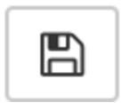

Data Extraction and Management Using Python
Nicholas Wolf and Vicky Steeves | October 17, 2017

First Things and Disclaimers...
- Today the focus is using Python for extracting and managing data (not a Python course). Emphasis on deploying beginner/intermediate Python skills.
- To learn Python, try lynda.com (NYU subscription), CodeAcademy.
- Setting up a Python environment: Python + text editor + cmd/terminal...plus, a lot of key libraries.
- Shortcut: Download Anaconda and work in IPython/Jupyter Notebook...includes pandas, numpy, nltk, and other libraries useful to researchers.
Getting Started...
- Download Anaconda.
- Programs >> Anaconda and select Jupyter Notebook.
- Notebook opens in a browser window. On upper right-hand corner, select New >> Python 3. Give your new notebook a name by clicking on the title.
- Press escape (esc) + L to toggle on code line numbers.
Jupyter Notebook Basics
- We will be writing scripts in the cell block, then running them.
- To save your script, click on the save icon. 
- To run a script, select Cells >> Run Cells or click on the Run icon.
That's it!
Python Basics
- Assign variables using = e.g.
mynumber = 1
- Import libraries using
import
- To add a comment, place a # to left of the comment line.
- Indents are used to indicate presence of loops (pay attention to indenting!)
Python Basics
- Four very important base Python object types:
1. Strings: a set of alphanumeric characters, denoted with quotes, e.g.'abcd' 'Jack' '5f7three'
2. Integers: a numeric value, denoted as a numeral with note quotes, e.g.1 2300 75
3. Lists: a set of objects separated by commas and denoted with brackets [ ] , e.g.[“abcd”, 1, “Jack”, 2300]
Python Basics
4. Dictionary: a set of key:value pairs separated by commas and denoted with curly braces, e.g.{“Jack”: 1 , “abcd” : “5f7three” , 3 : “three” }To output, use print ( ) e.g.
mylist = [1 , 2, 3] print(mylist) >> [1, 2, 3]
Resources
- NOAA Storm Events database
- Reproducible Science feed
- Templates for today's session
- How to describe path to Desktop in Mac and Windows:
dirwindows = r'C:\Users\USERNAME\Desktop\FILENAME'
dirmac = r'/Users/USERNAME/Desktop/FILENAME'
Questions?
Email me: vicky.steeves@nyu.edu
Learn more about RDM: guides.nyu.edu/data_management
Get this presentation: guides.nyu.edu/data_management/resources
Make an appointment: guides.nyu.edu/appointment